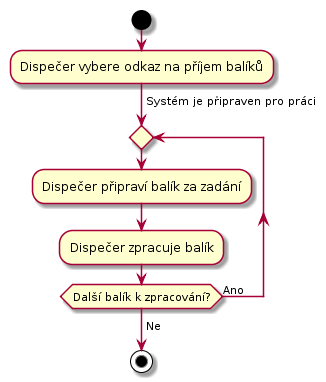
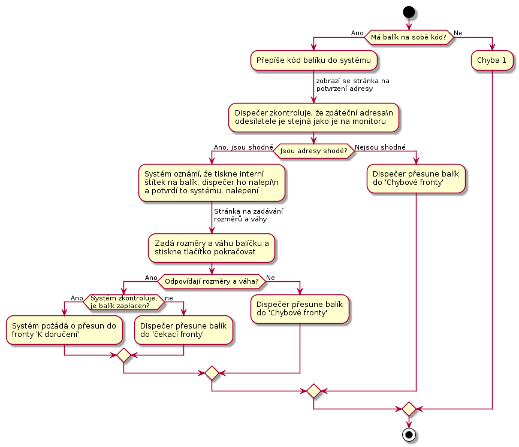

Dispečer
Dispečer je na depu. Depo je místo, kam se doručují balíky a s něho zase vydávají dalšímu doručování. Z depa se mohou balíky vydávat přepravní společnosti, nebo se mohou vydat k doručení do dalšího depa. V aktuální verzi s posílaním do dalšího depa nepočítáme.
Balíky jsou rozděleny do takzvaných front. To jsou místa, kde se mohou nechat do další práce s nimi. Fronty budou tyto:
- Přijímací fronta - Zde jsou balíky čekající na zpracování v UC-21.
- Čekací fronta - Zde balíky čekají, až zákazník zaplatí za přepravu.
- K doručení - Balíky z této fronty se rozdělí dopravcům.
- Chybová fronta - zde budou balíky, které nelze dohledat v systému, nemají kód. Nebo hrubě neodpovídají rozměrama.
- Fronty pro přepravce, napřiklad fronta pro předání DPD k finálnímu doručení adresátovi.
UC-20 - Přijetí balíku
Dispecer přijme balíky od dopravce a dá je do přijímací fronty k dalšímu zpracování.
Dispečer potvrdí převzetí balíku podepsáním protokolu dopravce.
UC-21 - Zpracování přijatých balíku
Přijate balíky je třeba vložit do systému. Dispečer bude frontu balíků zpracovávat následovně:

Zpracovaní jednoho balíku je pro srozumitelnost na samostatném obrázku:

Dispečer na balík tiskne interní štítek. Je třeba na balík v procesu nalepit interní štítek co nejdřív. V případě chyby to usnadní pozdější práci s balíkem a jeho sníží možnost omylu.
To jestli naměřené rozměry odpovídají zadaným zjistíme tak, že seřadíme všechny hodnoty podle velikosti a pak porovnáme s těmi hodnotami, co zadal dispečer stejně seřazenými. Jednotlivé hodnoty porovnáme tak, že pokud se budou lišit o méně než 5 cm, pak je budem považovat za shodné. Pokud se dále nebudou odlišovat o více než 10%, pak je budem považovat za shodné. Váha se bude porovnávat s tolerancí 10%.
Pokud balik nema stitek pak, pak se zkontroluje adresa odesilatele, podarilo se zparovat jednoznacne? Pokud ano, pak se zkontroluje dorucovaci a pokud sedi, pak se vytiskne stitek.
Pokud nesedi zpatecni adresa, pak chybova fronta. Prepise adresu do systemu a chybova fronty.
TODO 1 - dispecer se pokusi dohledat zakaznika podle odesilaci adresy, pokud se povede, tak sje dal, pokud nepovede, pak se presunu do chybove fronty. Potvrdit si.
TODO Chybove stavy
TODO Obrazovky
UC-22 - Zpracování čekajících balíků
Dispečer v systému otevře stránku pro zpracování fronty ‘čekajících balíků’ a bere po jednom začne balíky zpracovávat.

Do chybové fronty se balík přesune například, když zákazním nezaplatí déle než definovanou dobu a supportu se jestě nepodařilo se zákazníkem domluvit co s balíckem dál dělat.
Do fronty k doručení se balík přesune, v případě že zákazník zruší objednávku a budem balík budem posílat zákazníkovi zpět.
Dispečer se může kdykoliv během zpracovávání fronty rozhodnout činnost přerušit.
UC-23 - Předání balíků koncovému dopravci
Před tím než dispečer předá balíky z příslušné fronty dopravci, musí připravit předávací protokol. Dispečer v systému najde příslušnou frontu dopravce a stiskne na ní, že jí chce ukončit. na to mu systém vygeneruje předávací protokol, případně jeho kopii.
Když pro balíky osobně přijde dopravce, dispečer mu předá balíky a si nechá v protokolu potvrdit předání balíků.
Zde budeme muset zohlednit různé chování dopravců při předávce balíků.
Zohlednit, pripad, ze dopravce prinesl nedorucitelne nebo odmitnute baliky.
UC-24 - Zpracování balíků 'k doručení'
Dispečer v systému otevře stránku pro zpracování fronty 'k doručení' a bere po jednom začne balíky zpracovávat.
Čtečkou čárových kódů načte z interního štítku kód balíčku. Systém řekne k jakému dopravci je balíček určen, tedy do jaké fronty dopravce má balíček vložit. Dispečer vloží balíček do dané fronty, potvrdí to v systému a pokračuje na další balíček.

Po vážení se aktuální váha balíku porovná s hodnotou naměřenou po nalepení interního štítku na balík. To by mělo snížit pravděpodobnost, že dojde k záměně balíků, nebo jiné chybě.
Musí existovat fronta pro Českou poštu. V případě chyby potřebujem poslat balík zpět zákazníkovy.
Dispečer se může rozhodnout, že činnost přerusí i za situace, když je fronta k doručení zpracovaná jen částečně.
UC-25 - Zpracování balíků v chybové frontě
Tady budou balíky s interním štítkem i bez něho. Dispečer balíky projde a spojí s podporou a společně se pokusí balíky identitfikovat a domluvit se na dalším postupu.